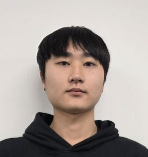

Real-time Multiplayer Sync System
Photon Fusion을 도입하여 고성능 실시간 세션 관리 및 사용자 인증 백엔드 시스템을 구축했습니다. 서버-클라이언트 간의 데이터 동기화 틱레이트를 최적화하고 네트워크 대역폭 손실을 최소화하는 아키텍처를 설계했습니다.

단순한 코드 구현을 넘어, 복잡한 문제의 본질을 파고들고 최적의 솔루션을 찾아내는 과정에서 성장의 에너지를 얻습니다.
현재 **Photon Fusion을 활용한 실시간 멀티플레이어 환경 아키텍처**와 **디지털 사운드 시그널 프로세싱(DSP)** 최적화에 깊이 몰입해 있습니다.
Photon Fusion을 도입하여 고성능 실시간 세션 관리 및 사용자 인증 백엔드 시스템을 구축했습니다. 서버-클라이언트 간의 데이터 동기화 틱레이트를 최적화하고 네트워크 대역폭 손실을 최소화하는 아키텍처를 설계했습니다.
VST 플러그인 환경에서 디지털 레코딩 시그널의 최적화를 위한 효율적인 오디오 DSP(Digital Signal Processing) 체인을 설계했습니다. 오디오 레이턴시를 최소화하고 사운드 퀄리티를 극대화하기 위한 시그널 흐름 분석과 파라미터 튜닝을 수행했습니다.